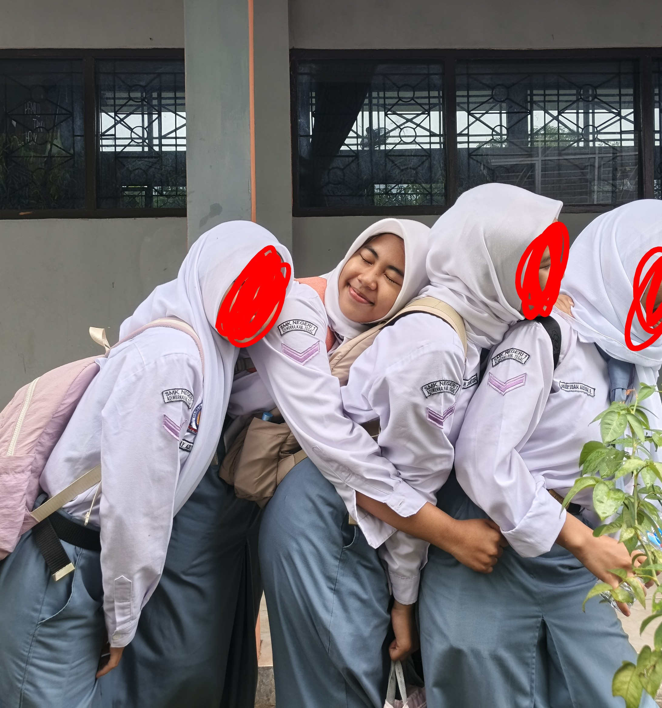

Hai tuy, i heard from nita, about ur parents. i hope you okay, maybe that things hurt you so bad, but please remember that yoy are loved ta. i hope you remember that. tuy, aku nggak bakalan ngomong kamu buat untuk terus merasa baik-baik aja, aku paham kok, tapi aku berharap jangan sampai sakit itu menguasai kamu, apalagi sampai melukai diri kamu sendiri ya tuy. aku juga ikut sedih kalo semisal kamu sedih. aku nggak tau rasanya bagaimana berada diposisi kamu tuy, aku hanya tau bahwa kamu pasti sedih. aku nggak bakal bilang "udah ta gapapa" atau "semua bakal berlalu" karena mungkin buat kamu yang merasakan, itu adalah hal yang berat. semoga kedepannya hari-harimu bisa dijalani dengan baik dan bahagia ya atuy, be happy ya atuy. maaf ya aku ngirim kaya gini, i just want to, you remember that there are many people love you, and care bout you. Safira Artha🤍✨